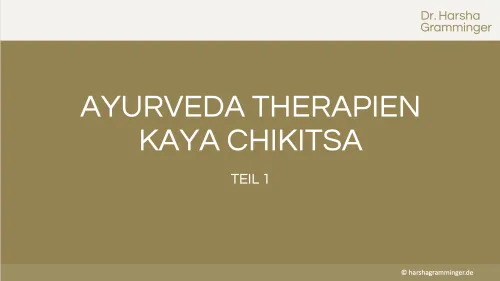

Werde zertifizierter Holistic Skin and Health Expert
Produktprofil · Marktplatz-Daten 2026-10-14 · Verkaufsseiten-Recherche 2026-10-14 · Kategorien: Health & Fitness, Education
- Werde zertifizierter Holistic Skin and Health Expert ist ein/e Distance learning (Germany) in Health & Fitness und Education, vertrieben über den Digistore24-Marktplatz von Anbieter Gesundhaut, gelistet seit 2026-01-20.
- Listenpreis $3751.27 (single payment, installment) — Checkout, Auslieferung und Rückerstattungen laufen über Digistore24 selbst, nicht über den Anbieter.
- Käuferschutz: keine standardisierte Garantie-Formulierung gefunden — Rückerstattungsbedingungen vor der Zahlung auf der offiziellen Seite prüfen.
Interesse an Werde zertifizierter Holistic Skin and Health Expert? Aktueller Preis, Boni und Garantiebedingungen finden Sie auf der offiziellen Seite des Anbieters:
Offizielle Verkaufsseite ansehen
Affiliate-Link (Werbung) — wir verdienen ggf. eine Provision, ohne Mehrkosten für Sie.

Marktplatz-Daten
| Produkttyp | Distance learning (Germany) |
|---|---|
| Preis | $3751.27 (Single payment, Installment) |
| Garantie/Rückgabe | Laut Verkaufsseite des Anbieters — vor dem Kauf auf der offiziellen Seite prüfen |
| Anbieter | Gesundhaut (gelistet seit 2026-01-20) |
Marktplatz-Beschreibung des Anbieters
Online Ausbildung zum Holistic Skin & Health Expert, staatlich Zugelassen mit Abschlusszertifikat ( 6 Monate) Werde zertifizierter Holistic Skin & Health Expert nach der Gesundhaut® Methode Deine Vorteile auf einen Blick: ZFU-zertifizierter Fernlehrgang: Ein staatlich geprüfter Fernunterricht nach dem FernUSG. Sofortiger Start: Dein Zugang zur Lernplattform wird unmittelbar nach Zahlungseingang freigeschaltet. Praxisnahe Inhalte: 10 Module inkl. Videoinhalten, von Stoffwechselgrundlagen über Blut- und Darmdiagnostik bis hin zum Lifestylemanagement. Interaktive Lernerfolgskontrolle: Multiple-Choice-Tests nach den Modulen sowie zwei fachkundig begleitete Fallarbeiten (Blut- und Darmbefund). Zertifizierter Abschluss: Nach Bestehen der internen Abschlussprüfung erhältst du dein Zertifikat, welches zudem die Zulassungsvoraussetzung für eine optionale personenbezogene TÜV Rheinland Zertifizierung erfüllt Während der 6 Monate erhältst du Zugriff auf deine Community Du erhälst persönliches Feedback bei deiner Umsetzung über die Abgabefunktionen in deiner Lernplattform ( Learning Suite) 18 Monate Zugriff auf die Lerninhalte Modulübersicht der Ausbildung Dein Start 10 Lektionen | 67 Min. Modul 1: Einführung in die Gesundhaut Methode 6 Lektionen | 79 Min. Modul 2: Grundlagen Stoffwechsel 20 Lektionen | 321 Min. Modul 3: Haut als Wegweiser – Korneotherapeutisch denken 37 Lektionen | 525 Min. Modul 4: Anamnese / Fragebögen 23 Lektionen | 192 Min. Modul 5: Blutwerte in der Praxis 40 Lektionen | 370 Min. Modul 6: Darmdiagnostik in der Praxis 30 Lektionen | 317 Min. Modul 7: Nährstoffmedizin 25 Lektionen | 251 Min. Modul 8: Stoffwechselungleichgewichte erkennen und regulieren 31 Lektionen | 553 Min. Modul 9: GESUNDHAUT Reset Ernährungskonzept 27 Lektionen | 355 Min. Modul 10: Lifestylemanagement 22 Lektionen | 252 Min. Exklusive Bonusinhalte Zusätzlich zu den Kernmodulen erhältst du Zugriff auf umfangreiches Bonusmaterial für deine Praxis: Bonus: Health & Skin Tools (6 Lektionen | 176 Min.) Bonus: Skin Tools: DIY Hautpflege (11 Lektionen | 335 Min.) Bonus: Deine ersten Schritte als Expertin (19 Lektionen | 171 Min.) Bonus: Ganzheitliches Coaching & Kommunikation in der Praxis (4 Lektionen | 35 Min.)
Von der Verkaufsseite des Anbieters
Seitentitel: Skin & Health Expert Ausbildung | Haut- & Gesundheit & Hormone | ZFU geprüft | gesundhaut
Meta-Beschreibung: Staatlich zugelassene Ausbildung (ZFU-Nr. 7570426) zur Holistic Skin & Health Expertin für Haut- und Frauengesundheit. Lerne Laborwerte zu verstehen und Haut, Hormone, Darm und Mikronährstoffe zusammenzudenken. Über 250 ausgebildete Expertinnen.
Hauptüberschrift
Für wen diese Ausbildung gemacht ist
Abschnitts-Überschriften
- Für Quereinsteigerinnen
- Für Kosmetikerinnen
- Für Friseurinnen
- Für Heilpraktikerinnen, Coaches und Therapeutinnen
- Und für wen nicht
Einstiegstext
die im Gesicht mehr sehen, als sie behandeln dürfen — und endlich verstehen wollen, was darunter liegt.
die sehen, wie das Haar ihrer Kundinnen dünner wird — und wissen, dass keine Behandlung der Welt daran etwas ändert, solange die Ursache nicht auf dem Tisch liegt.
Das ist keine Koketterie. Diese Arbeit verlangt, dass du mitdenkst. Wer das nicht will, wird hier nicht glücklich.
Preisangaben auf der Seite: €25.50 · €20.00 · €15.00 · €17.00 · €25.00
Recherche-Methode: rohes HTML · 6733 Wörter · Qualität: rich · recherchiert am 2026-10-14. Vollständige Recherche-Datei (MD) ↗
Gut zu wissen
- Hoher Preis: $3751.27 ist eine erhebliche Ausgabe — prüfen Sie, ob es einen Zahlungsplan gibt, und vergleichen Sie zuerst die günstigeren Alternativen der Kategorie.
- Keine Garantie-Formulierung in unserer Recherche gefunden — bestätigen Sie das Rückgabefenster auf der offiziellen Seite, bevor Sie kaufen.
Was ist Werde zertifizierter Holistic Skin and Health Expert?
Werde zertifizierter Holistic Skin and Health Expert ist ein/e distance learning (germany) in der Kategorie Gesundheit & Fitness des Digistore24-Marktplatzes, veröffentlicht von Anbieter Gesundhaut und im Verkauf seit 2026-01-20. Der Anbieter beschreibt es so: "Online Ausbildung zum Holistic Skin & Health Expert, staatlich Zugelassen mit Abschlusszertifikat ( 6 Monate) Werde zertifizierter Holistic Skin & Health Expert nach der Gesundhaut® Methode Deine Vorteile auf einen Blick: ZFU-zertifizierter Fernlehrgang: Ein s" (Marktplatz-Beschreibung des Anbieters, leicht gekürzt).
Werde zertifizierter Holistic Skin and Health Expert Preis: was Sie zahlen
Der Marktplatz listet Werde zertifizierter Holistic Skin and Health Expert zum $3751.27 Preis (single payment, installment). Digistore24 fügt im Checkout die gesetzliche Steuer Ihres Landes hinzu — dort sehen Sie den Endbetrag vor der Zahlung. Die Verkaufsseite selbst nennt: €25.50, €20.00, €15.00, €17.00 (Anbieteraussagen — verbindlich ist der Checkout-Betrag). Eine separate Plattformgebühr gibt es nicht; Anbieter können eigene Upsells nach dem Checkout anbieten.
Werde zertifizierter Holistic Skin and Health Expert Rückerstattung und Geld-zurück-Garantie
Wir haben keine standardisierte Garantie-Formulierung auf der Verkaufsseite gefunden. Rückerstattungen für Digistore24-Käufe laufen über die Plattform: Antrag über den Support-Link in Ihrer Bestell-E-Mail, innerhalb des Garantiezeitfensters, das im Checkout angezeigt wird. Praktischer Rat: Entscheiden Sie innerhalb des Fensters — wenn das Produkt unter den Erwartungen bleibt, erstatten lassen statt irren lassen.
Mechanik im Detail: So funktionieren Digistore24-Rückerstattungen.
Für wen ist Werde zertifizierter Holistic Skin and Health Expert geeignet?
Basierend auf der Gesundheit & Fitness-Einordnung und der single payment, installment-Abrechnung richtet sich Werde zertifizierter Holistic Skin and Health Expert an Käufer, die gesundheit & fitness-Lösungen suchen und ein Budget für einen Premium-Kauf eingeplant haben. Der ehrliche Test ist nicht die Kategorie, sondern Ihre eigene Situation: Werden Sie es realistisch innerhalb des Garantiefensters nutzen? Wenn ja, ist der Preis eine Investition; wenn nein, ist er Ballast — unabhängig von der Qualität.
Ist Werde zertifizierter Holistic Skin and Health Expert seriös? Was Sie vor dem Kauf prüfen
Wir bewerten keine Seriosität — das kann niemand, ohne das Produkt zu nutzen. Prüfbare Punkte, alle auf dieser Seite: die Marktplatz-Historie des Anbieters (im Verkauf seit 2026-01-20), die wörtlichen Verkaufsseiten-Auszüge unten (gekennzeichnet als Anbieteraussagen — deren Werbung, nicht unsere Empfehlung), die Garantiebedingungen im Checkout und die Auslieferungsart. Vorsichtsignale bei jedem Angebot: Countdown-Dringlichkeit gepaart mit vagen Rückerstattungsbedingungen, Testimonials ohne Datum und Anbieterseiten, die den Preis bis zum Checkout verstecken.
Wie kommen Sie nach dem Kauf an Werde zertifizierter Holistic Skin and Health Expert?
Der Checkout läuft über Digistore24. Nach der Zahlung: Lieferdetails kommen per E-Mail und in Ihrem Digistore24-Kundenkonto. Bewahren Sie die Bestell-E-Mail auf — sie ist Ihr Schlüssel zum/d zur distance learning (germany), zu Rückerstattungsanträgen und zum Digistore24-Käufersupport.
Werde zertifizierter Holistic Skin and Health Expert Erfahrungen: so recherchieren Sie richtig
Die meisten „Erfahrungsberichte" zu Marktplatz-Produkten sind Affiliate-Inhalte — einschließlich Seiten wie dieser, die an Käufen mitverdienen. Behandeln Sie jeden Bericht (auch unseren) als Ausgangspunkt und prüfen Sie gegen Primärquellen: die Verkaufsseite des Anbieters, die Digistore24-Rückerstattungsrichtlinie und — für gesundheit & fitness — unabhängige Communities außerhalb des Affiliate-Ökosystems. Auf dieser Seite sind die Verkaufsseiten-Auszüge unten wörtlich zitiert, damit Sie die Aussagen des Anbieters bewerten können, ohne wegzuklicken.
Wie Sie Werde zertifizierter Holistic Skin and Health Expert sicher kaufen
- Öffnen Sie die offizielle Verkaufsseite und lesen Sie das vollständige Angebot.
- Bestätigen Sie Endpreis und Garantiezeitfenster auf der Digistore24-Kassenseite — sie ist bindend, kein Vergleichsportal.
- Zahlen Sie innerhalb des Digistore24-Checkouts (niemals per Überweisung oder Off-Platform-Links).
- Speichern Sie die Bestellbestätigung; notieren Sie die Rückerstattungsfrist im Kalender.
- Prüfen Sie zügig. Der Digistore24-Käufersupport hilft, wenn der Anbieter nicht reagiert.
Vollständiges Recherche-Archiv für dieses Produkt (Markdown: kompletter Marktplatz-Datensatz + wörtliche Verkaufsseiten-Auszüge): Werde zertifizierter Holistic Skin and Health Expert — Datenarchiv (.md).
- Listenpreis & Abrechnung — Quelle: offizielle Digistore24-Marktplatz-API, Stand 2026-10-14. Maßgeblich für den aktuellen Preis ist immer die Kassenseite.
- Verkaufsseiten-Zitate — Quelle: https://www.gesundhaut.de/, abgerufen 2026-10-14 (Methode: rohes HTML). Verify: offizielle Seite öffnen.
- Garantie / Rückgabe — vom Anbieter festgelegt; vor dem Kauf auf der Verkaufsseite bestätigen.
- Nicht von uns geprüft: Produktqualität, Ergebnisse, Testimonials — kein Praxistest für dieses Listing durchgeführt.
Häufige Fragen zu Werde zertifizierter Holistic Skin and Health Expert
Antworten aus dem Marktplatz-Snapshot (2026-10-14) und der Verkaufsseiten-Recherche (2026-10-14); Anbieteraussagen sind inline gekennzeichnet.
Was ist Werde zertifizierter Holistic Skin and Health Expert?
Werde zertifizierter Holistic Skin and Health Expert ist ein Angebot des Typs „Distance learning (Germany)" im Digistore24-Marktplatz, Anbieter: Gesundhaut, gelistet seit 2026-01-20. Eingepflegt unter Gesundheit & Fitness und Bildung. Digistore24 wickelt Checkout, Lieferung und Rückgaben ab.
Wie viel kostet Werde zertifizierter Holistic Skin and Health Expert?
Der Digistore24-Marktplatz listet es für $3751.27 (single payment, installment). Preise legt der Anbieter fest und können sich ändern — der Marktplatz-Eintrag oben zeigt den Schnappschuss; die offizielle Verkaufsseite zeigt den aktuellen Preis.
Gibt es eine Geld-zurück-Garantie für Werde zertifizierter Holistic Skin and Health Expert?
Unsere Verkaufsseiten-Recherche hat keine explizite Garantie-Formulierung gefunden. Viele Digistore24-Produkte bieten 60 Tage Geld-zurück, aber das legt jeder Anbieter selbst fest — bestätigen Sie es auf der offiziellen Verkaufsseite, bevor Sie kaufen.
Ist Werde zertifizierter Holistic Skin and Health Expert seriös?
Wir bewerten keine Seriosität — wir veröffentlichen überprüfbare Zahlen: Anbieter Gesundhaut (gelistet seit 2026-01-20), mit der vollständigen Verkaufsseiten-Recherche archiviert auf dieser Seite (Anbieteraussagen als solche gekennzeichnet). Lesen Sie unsere 6-Punkte-Bewertungsmethode und entscheiden Sie anhand der Zahlen — oder diskutieren Sie Werde zertifizierter Holistic Skin and Health Expert auf GitHub.
Gibt es Alternativen zu Werde zertifizierter Holistic Skin and Health Expert?
Ja — die nächstähnlichen Angebote derselben Kategorie sind Heilpraktikerausbildung - Online-Akademie, Gamma-Training Premium, Practitioner EnergieHypnose Modular. Details in der Vergleichstabelle oben bzw. auf der Alternativen-Seite mit allen Marktplatz-Zahlen.
Wo kann ich Werde zertifizierter Holistic Skin and Health Expert sicher kaufen?
Nur über die offizielle Verkaufsseite, die auf dieser Seite verlinkt ist (Checkout und Rückgaben laufen über Digistore24). Prüfen Sie dort Preis und Garantie vor der Bestellung. Der Link ist ein Affiliate-Link — der Kauf unterstützt diese Website ohne Mehrkosten für Sie.
Wie erhalte ich Werde zertifizierter Holistic Skin and Health Expert nach der Zahlung?
Der Checkout läuft über Digistore24: Nach der Zahlung erhalten Sie Ihren Zugang oder Download per E-Mail und in Ihrem Digistore24-Kundenkonto. Lieferdetails für diesen Produkttyp: siehe Verkaufsseite des Anbieters. Bei Problemen kann der Digistore24-Käufersupport Ihre Bestellung wiederherstellen.
Alle 50 Käuferfragen zu Gesundheit & Fitness — das komplette Kategorie-FAQ.
Werde zertifizierter Holistic Skin and Health Expert auf Reddit diskutieren
In Community-Threads vergleichen echte Käufer Erfahrungen. Wir verlinken Communities, keine einzelnen Posts — Threads verschwinden, Subreddits bleiben:
- r/FITNESS — deutschsprachige Community mit Diskussionen zu health & fitness.
- Reddit-Suche nach „Werde zertifizierter Holistic Skin and Health Expert" — Live-Ergebnisse, von uns nicht beeinflusst.
- Top-„Erfahrungs"-Treffer dieses Jahr — selbst nach Aktualität filtern.
Passendes auf Amazon.de
Physische Produkte und Zubehör, die häufig zusammen mit Werde zertifizierter Holistic Skin and Health Expert gekauft werden:
- Nahrungsergänzung auf Amazon.de — Top-Ergebnisse, Amazon-Ranking.
- Bestseller: Nahrungsergänzung — live Liste von Amazon, von uns nicht kuratiert.
Werbung: Als Amazon-Partner verdient DigistorePicks DE an qualifizierten Käufen (Partner-tag adminstorede-21). Amazon setzt eigene Preise und Provisionen (niedrige einstellige Prozente — weit unter den 30–75% der Digistore24-Anbieter). Amazon ist ein Convenience-Angebot für Sachprodukte, kein Ersatz für das digitale Produkt oben.
Ähnliche Angebote in Gesundheit & Fitness

Eine vollständig strukturierte, medizinisch fundierte Online-Ausbildung zur Vorbereitung auf die Heilpraktikerprüfung – mit klarem Curriculum, systematischem Au

1:1 Online Training per Video Mentale Klarheit auf Knopfdruck – mitten im echten Leben. Stell dir vor, du könntest deinen Fokus, deine Gelassenheit und deine Wa

bis zu 10% Provision | 600.000€ Umsatzpotenzial für 2026 Marktplatz-Beschreibung Sichern Sie sich Ihren Anteil am Erfolg: Wir suchen exklusive Partner für ein 6

Bis zu 10% Provision | 600.000€ Umsatzpotenzial für 2026 Marktplatz-Beschreibung Sichern Sie sich Ihren Anteil am Erfolg: Wir suchen exklusive Partner für ein 6
Optionen vergleichen? Werde zertifizierter Holistic Skin and Health Expert im Vergleich mit den nächsten Alternativen — Marktplatz-Zahlen direkt nebeneinander.
Wie schneidet Werde zertifizierter Holistic Skin and Health Expert ab? (Marktplatz-Zahlen)
| Produkt | Typ | Preis | Provision | Checkout-CR* | Storno* | Verdienst/Verkauf |
|---|---|---|---|---|---|---|
| Werde zertifizierter Holistic Skin and Health Expert | Distance learning (Germany) | $3751.27 | 15 % | — | — | $562.69 |
| Heilpraktikerausbildung - Online-Akademie | Online-Coaching | $2651.28 | 30 % | — | — | $795.39 |
| Gamma-Training Premium | Online-Coaching | $2538.46 | 0 % | — | — | $559.40 |
| Practitioner EnergieHypnose Modular | Seminar for business customers | $5559.51 | 10 % | — | — | $555.95 |
| Intensiv Practitioner - 6 Tage am Stück | Seminar for business customers | $5559.51 | 10 % | — | — | $555.95 |
Entscheidungsfaktoren für Käufer
- Funktion: Checkout-Konversion und Anbieter-Bilanz vergleichen — beide in der Tabelle oben.
- Passung: Typ und Voraussetzungen (Lieferformat, Vorkenntnisse) in jedem Profil prüfen.
- Wartung: Die Stornoquote ist das Kaufreue-Signal; Nutzungsbedingungen stehen auf den offiziellen Seiten.
- After-Sales: Garantie-Formulierung und Support — vor dem Kauf auf offiziellen Seiten verifizieren.
* Anbieter-seitige Statistiken; abhängig von der Traffic-Qualität, keine Prognose. Vollständiger Kontext: Alternativen-Seite zu Werde zertifizierter Holistic Skin and Health Expert.
Werde zertifizierter Holistic Skin and Health Expert ist auch gelistet in
Bildung (597 Produkte)
Ähnliche Preislage in Gesundheit & Fitness
Persönliche 1:1-Intensivbegleitung für Menschen, die sich erschöpft, verloren oder fremd im eigenen Leben fühlen – und den Weg zurück zu sich selbst gehen möcht

Ayurveda Therapien Teil I / Kaya Chikitsa Dieser Kurs ist für Menschen, die ayurvedischen Grundlagen bereits erworben haben und sich nun mit den praktischen Anw
Ähnliche Suchanfragen
Wo Sie es sich ansehen können
Wo Sie es sich ansehen können
Aktuelle Preise, Garantie und Boni finden Sie auf der offiziellen Verkaufsseite:
Offizielle Verkaufsseite ansehen
Das ist ein Affiliate-Link (Werbung) — kaufen Sie darüber, verdienen wir ggf. eine Provision, ohne Mehrkosten für Sie.
Quellen & weiterführende Informationen
- Offizielle Verkaufsseite (aktueller Preis, Garantie, Boni): www.gesundhaut.de/ (Affiliate-Link)
- Öffentliche Digistore24-Produktseite: checkout-ds24.com/product/662876
- Vollständige Recherche-Datei (Markdown, versioniert): content/products/55703-werde-zertifizierter-holistic-skin-and-health-expert.md
- Marktplatz-Kategorie: Gesundheit & Fitness
Wie wir Produkte wie Werde zertifizierter Holistic Skin and Health Expert bewerten
Sechs Prüfungen, ausschließlich mit offiziellen Marktplatz-Zahlen. Die vollständige Bewertungsmethode lesen · unsere Recherche-Standards & Kennzeichnung.
Fragen oder eigene Erfahrungen mit Werde zertifizierter Holistic Skin and Health Expert?
Praxis-Tests veröffentlichen wir erst, nachdem wir ein Produkt selbst gekauft haben — aber Ihre Erfahrung hilft anderen Lesern: Diskussion zu Werde zertifizierter Holistic Skin and Health Expert auf GitHub starten/verfolgen. Falsche Zahl gefunden? Korrektur melden — jede Seite zeigt ihre Datenstände, Korrekturen gelten für die ganze Website.